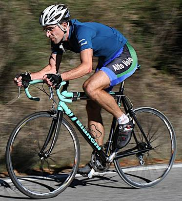

Week 6 Results: Page Mill
18 Nov 2006
|
2006 Low-Key Hillclimbs Week 6 Results: Page Mill 18 Nov 2006 |
|  |
| Tracy Colwell approaching the Page Mill Summit. photo by Sheri Greenspan |
Tracy Colwell returned to the 2006 Low-Key series, making an authoritative statement with his smokin' time of 33:12, beating his already impressive 34:38 from 1996. It wasn't even close, with second-place Jens Heycke posting a time of 35:57, almost three minutes back. Tracy is still in strong contention for the overall if he finishes Mt Hamilton, which will give him the maximum scoring 3 climbs for this year's series.
Meanwhile, Cheryl Hennessy showed she is looking good for the women's overall, consolating her lead there by posting the fastest women's time up the slopes of Page Mill, with Shannon Bankosh second and Stephanie Gruszunski third. There was another strong women's turn-out this week, with 10 completing the climb.
In the team competition, Western Wheelers once again showed its strength, posting the week's top score, with AV: Old Guys Finish and Pen Velo/Kondra following. Of special note is Velo Girls, with three women posting scores this week.
This Thursday: Mount Hamilton!
Thanks to coordinator Judy Colwell, with help from Patt Baenen, Brenda Brunner, Dan Connelly, Ingrid Erkman, Scott Frake, Sheri Greenspan, Penny Hutchinson, and James Porter for making today's climb possible!median time = 45:33
pl # rider team category time score 1 51 Tracy Colwell Team Colwell 2 33:12 137.20 2 61 Jens Heycke Me 45+ 35:57 126.70 3 141 Carl A. Nielson Pegasus 36:05 126.24 4 31 Patrick Gordis Grizzly Peak Cyclists 40+ 36:24 125.14 5 45 Rupert Brauch WAV-ARA 3 37:15 122.28 6 37 Bill Lloyd Le Matin 1 37:17 122.17 7 48 David Kelly Webcor/Alto Velo 4 37:35 121.20 8 148 Dan Brehmer Organic Athlete 40+ 38:36 118.01 9 122 Michael Gonia Western Wheelers 40+ 38:52 117.20 10 16 Peter Mehlitz 45+ 40:24 112.75 11 116 Shance Ordell Western Wheelers 35+ 40:26 112.65 12 124 Jeff Farnsworth Western Wheelers 40+ 41:02 111.01 13 88 Peter Tapscott AV: Old Guys Finish 50+ 41:20 110.20 14 35 Ron Brunner Commuter Commuter 41:46 109.06 15 142 Rich Hill 40+ 41:57 108.58 16 18 Jeff Loufit 45+ 42:37 106.88 17 146 Tom Malzbender 42:44 106.59 18 4 Fred E. Stamm Pen Velo/Kondra 50+ 42:53 106.22 19 6 Greg Dougald AV: Old Guys Finish 40+ 43:24 104.95 20 21 Pete Heller AV: Old Guys Finish 50+ 43:34 104.55 21 29 Dean Larson Team Dino 40+ 43:46 104.07 22 140 Gary Griffin 45:33 100.00 23 110 Edward Miller SLACer 65+ 45:50 99.38 24 2 Kevin Winterfield Low-Key 46:04 98.88 25 90 H. William Mirbach Pen Velo/Kondra 55+ 46:07 98.77 26 138 Javier Szwarcberg Western Wheelers Whatever 46:40 97.61 27 9 Ken Straub Team Bikeaholics Older Than You 46:42 97.54 28 11 Peter Merril Adobe 50+ 47:04 96.78 29 94 Todd Benjamin 47:39 95.59 30 64 Keith Devlin Team Devlin 59+ 47:43 95.46 31 34 Stephen Fong San Jose Bike Club 5 47:54 95.09 32 149 Steve Sprang 30+ 48:15 94.40 33 126 Samual Wilson Webcor/Alto Velo Old 49:19 92.36 34 143 QP Lin 50:44 89.78 35 15 Rich Brunner Cruzie 39ish 51:33 88.36 36 66 Eric Roodhouse SVTC 52:32 86.71 37 49 Adam Tow Blubber Busters Infinity 54:08 84.14 38 25 Tim Porcival Pen Velo/Kondra 5 54:13 84.01 39 10 Dick Robinson TNT 59+ 58:17 78.15 40 144 Jeff Rocca GGTC 40+ 58:25 77.97 41 91 Beau Hoover Team Cyclops Unicycle 62:07 73.33 42 89 JT Conklin Identity Engines 35+ 62:14 73.19 43 60 Nathan Hoover Team Cyclops Unicycle 71:54 63.35
median time = 55:48
pl # rider team category time score 1 7 Cheryl Hennessy Velo Bella 35+ 48:51 114.23 2 139 Shannon Bankosh San Jose Bike Club 5 50:00 111.60 3 68 Stephanie Gruszunski Velo Girls 51:02 109.34 4 147 Susanne Schwarz Clueless 51:57 107.41 5 130 Sue Young GDI Beginner 55:20 100.84 6 145 Andrea Ivan AV/Webcor 50+ 56:16 99.17 7 95 Kelly Kasik 58:04 96.10 8 106 Angela Liu Velo Girls 25-29 71:19 78.24 9 71 Marie Borselle Velo Girls 40+ 72:59 76.46 10 27 Christine Holmes Librarian 40+ 75:34 73.84
pl team score scoring 1 Western Wheelers 340.86 (Michael Gonia, Shance Ordell, Jeff Farnsworth) 2 AV: Old Guys Finish 319.71 (Peter Tapscott, Greg Dougald, Pete Heller) 3 Pen Velo/Kondra 289.00 (Fred E. Stamm, H. William Mirbach, Tim Porcival) 4 Velo Girls 264.04 (Stephanie Gruszunski, Angela Liu, Marie Borselle) 5 Webcor/Alto Velo 213.56 (David Kelly, Samual Wilson) 6 San Jose Bike Club 206.69 (Shannon Bankosh, Stephen Fong) 7 Team Colwell 137.20 (Tracy Colwell) 8 Team Cyclops 136.68 (Beau Hoover, Nathan Hoover) 9 Me 126.70 (Jens Heycke) 10 Pegasus 126.24 (Carl A. Nielson) 11 Grizzly Peak Cyclists 125.14 (Patrick Gordis) 12 WAV-ARA 122.28 (Rupert Brauch) 13 Le Matin 122.17 (Bill Lloyd) 14 Organic Athlete 118.01 (Dan Brehmer) 15 Velo Bella 114.23 (Cheryl Hennessy) 16 Commuter 109.06 (Ron Brunner) 17 Team Dino 104.07 (Dean Larson) 18 GDI 100.84 (Sue Young) 19 SLACer 99.38 (Edward Miller) 20 AV/Webcor 99.17 (Andrea Ivan) 21 Low-Key 98.88 (Kevin Winterfield) 22 Team Bikeaholics 97.54 (Ken Straub) 23 Adobe 96.78 (Peter Merril) 24 Team Devlin 95.46 (Keith Devlin) 25 Cruzie 88.36 (Rich Brunner) 26 SVTC 86.71 (Eric Roodhouse) 27 Blubber Busters 84.14 (Adam Tow) 28 TNT 78.15 (Dick Robinson) 29 GGTC 77.97 (Jeff Rocca) 30 Librarian 73.84 (Christine Holmes) 31 Identity Engines 73.19 (JT Conklin)